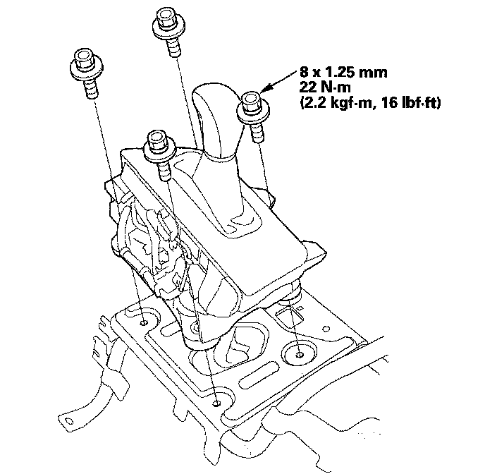

Shift Lever Installation
Shift Lever Installation1. Install the shift lever assembly on the console frame.

2. Assemble the center console by installing the following:
^ Center console box
^ Center console beverage holder
^ Center console panel
^ Center console latch panel
^ Console armrest
3. Install the center console.
4. Install the shift cable on the shift lever, and adjust the shift cable.
5. Install the beverage holder inner case.
6. Install the passenger's center console trim.